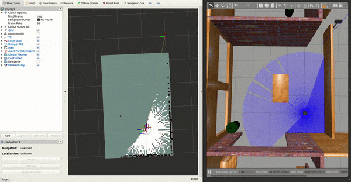

(SLAM) Navigating While Mapping¶
Overview¶
This document explains how to use Navigation 2 with SLAM. The following steps show ROS 2 users how to generate occupancy grid maps and use Navigation 2 to move their robot around. This tutorial applies to both simulated and physical robots, but will be completed here on physical robot.
Before completing this tutorial, completing the Getting Started. is highly recommended especially if you are new to ROS and Navigation2.
In this tutorial we’ll be using SLAM Toolbox. More information can be found in the ROSCon talk for SLAM Toolbox
Requirements¶
You must install Navigation2, Turtlebot3, and SLAM Toolbox. If you don’t have them installed, please follow Getting Started.
SLAM Toolbox can be installed via:
sudo apt install ros-<ros2-distro>-slam-toolbox
or from built from source in your workspace with:
git clone -b <ros2-distro>-devel git@github.com:stevemacenski/slam_toolbox.git
Tutorial Steps¶
0- Launch Robot Interfaces¶
For this tutorial, we will use the turtlebot3. If you have another robot, replace with suitable instructions.
Run the following commands first whenever you open a new terminal during this tutorial.
source /opt/ros/<ros2-distro>/setup.bashexport TURTLEBOT3_MODEL=waffle
Launch your robot’s interface and robot state publisher,
ros2 launch turtlebot3_bringup robot.launch.py
1- Launch Navigation2¶
Launch Navigation without nav2_amcl and nav2_map_server. It is assumed that the SLAM node(s) will publish to /map topic and provide the map->odom transform.
ros2 launch nav2_bringup nav2_navigation_launch.py
2- Launch SLAM¶
Bring up your choice of SLAM implementation. Make sure it provides the map->odom transform and /map topic. Run Rviz and add the topics you want to visualize such as /map, /tf, /laserscan etc. For this tutorial, we will use SLAM Toolbox.
ros2 launch slam_toolbox online_async_launch.py
3- Working with SLAM¶
Move your robot by requesting a goal through RViz or the ROS2 CLI, ie:
ros2 topic pub /goal_pose geometry_msgs/PoseStamped "{header: {stamp: {sec: 0}, frame_id: 'map'}, pose: {position: {x: 0.2, y: 0.0, z: 0.0}, orientation: {w: 1.0}}}"
You should see the map update live! To save this map to file:
ros2 run nav2_map_server map_saver -f ~/map
{kind=link}